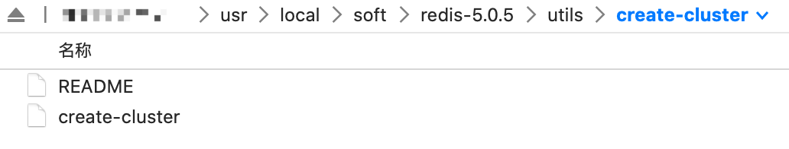
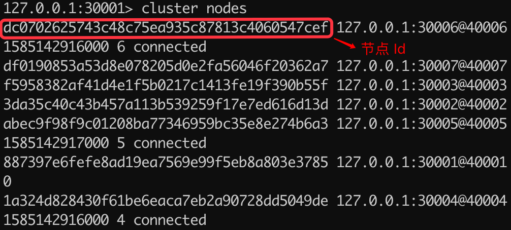

- 01 Redis 是如何执行的.md.html
- 02 Redis 快速搭建与使用.md.html
- 03 Redis 持久化——RDB.md.html
- 04 Redis 持久化——AOF.md.html
- 05 Redis 持久化——混合持久化.md.html
- 06 字符串使用与内部实现原理.md.html
- 07 附录：更多字符串操作命令.md.html
- 08 字典使用与内部实现原理.md.html
- 09 附录：更多字典操作命令.md.html
- 10 列表使用与内部实现原理.md.html
- 11 附录：更多列表操作命令.md.html
- 12 集合使用与内部实现原理.md.html
- 13 附录：更多集合操作命令.md.html
- 14 有序集合使用与内部实现原理.md.html
- 15 附录：更多有序集合操作命令.md.html
- 16 Redis 事务深入解析.md.html
- 17 Redis 键值过期操作.md.html
- 18 Redis 过期策略与源码分析.md.html
- 19 Redis 管道技术——Pipeline.md.html
- 20 查询附近的人——GEO.md.html
- 21 游标迭代器（过滤器）——Scan.md.html
- 22 优秀的基数统计算法——HyperLogLog.md.html
- 23 内存淘汰机制与算法.md.html
- 24 消息队列——发布订阅模式.md.html
- 25 消息队列的其他实现方式.md.html
- 26 消息队列终极解决方案——Stream（上）.md.html
- 27 消息队列终极解决方案——Stream（下）.md.html
- 28 实战：分布式锁详解与代码.md.html
- 29 实战：布隆过滤器安装与使用及原理分析.md.html
- 30 完整案例：实现延迟队列的两种方法.md.html
- 31 实战：定时任务案例.md.html
- 32 实战：RediSearch 高性能的全文搜索引擎.md.html
- 33 实战：Redis 性能测试.md.html
- 34 实战：Redis 慢查询.md.html
- 35 实战：Redis 性能优化方案.md.html
- 36 实战：Redis 主从同步.md.html
- 37 实战：Redis哨兵模式（上）.md.html
- 38 实战：Redis 哨兵模式（下）.md.html
- 39 实战：Redis 集群模式（上）.md.html
- 40 实战：Redis 集群模式（下）.md.html
- 41 案例：Redis 问题汇总和相关解决方案.md.html
- 42 技能学习指南.md.html
- 43 加餐：Redis 的可视化管理工具.md.html
- 捐赠
39 实战：Redis 集群模式（上）
Redis Cluster 是 Redis 3.0 版本推出的 Redis 集群方案，它将数据分布在不同的服务区上，以此来降低系统对单主节点的依赖，并且可以大大的提高 Redis 服务的读写性能。
Redis 将所有的数据分为 16384 个 slots（槽），每个节点负责其中的一部分槽位，当有 Redis 客户端连接集群时，会得到一份集群的槽位配置信息，这样它就可以直接把请求命令发送给对应的节点进行处理。
Redis Cluster 是无代理模式去中心化的运行模式，客户端发送的绝大数命令会直接交给相关节点执行，这样大部分情况请求命令无需转发，或仅转发一次的情况下就能完成请求与响应，所以集群单个节点的性能与单机 Redis 服务器的性能是非常接近的，因此在理论情况下，当水平扩展一倍的主节点就相当于请求处理的性能也提高了一倍，所以 Redis Cluster 的性能是非常高的。
Redis Cluster 架构图如下所示：
搭建 Redis Cluster
Redis Cluster 的搭建方式有两种，一种是使用 Redis 源码中提供的 create-cluster 工具快速的搭建 Redis 集群环境，另一种是配置文件的方式手动创建 Redis 集群环境。
快速搭建 Redis Cluster
create-cluster 工具在 utils/create-cluster 目录下，如下图所示：

使用命令 ./create-cluster start 就可以急速创建一个 Redis 集群，执行如下：
$ ./create-cluster start # 创建集群
Starting 30001
Starting 30002
Starting 30003
Starting 30004
Starting 30005
Starting 30006
接下来我们需要把以上创建的 6 个节点通过 create 命令组成一个集群，执行如下：
[@iZ2ze0nc5n41zomzyqtksmZ:create-cluster]$ ./create-cluster create # 组建集群
>>> Performing hash slots allocation on 6 nodes...
Master[0] -> Slots 0 - 5460
Master[1] -> Slots 5461 - 10922
Master[2] -> Slots 10923 - 16383
Adding replica 127.0.0.1:30005 to 127.0.0.1:30001
Adding replica 127.0.0.1:30006 to 127.0.0.1:30002
Adding replica 127.0.0.1:30004 to 127.0.0.1:30003
>>> Trying to optimize slaves allocation for anti-affinity
[WARNING] Some slaves are in the same host as their master
M: 445f2a86fe36d397613839d8cc1ae6702c976593 127.0.0.1:30001
slots:[0-5460] (5461 slots) master
M: 63bb14023c0bf58926738cbf857ea304bff8eb50 127.0.0.1:30002
slots:[5461-10922] (5462 slots) master
M: 864d4dfe32e3e0b81a64cec8b393bbd26a65cbcc 127.0.0.1:30003
slots:[10923-16383] (5461 slots) master
S: 64828ab44566fc5ad656e831fd33de87be1387a0 127.0.0.1:30004
replicates 445f2a86fe36d397613839d8cc1ae6702c976593
S: 0b17b00542706343583aa73149ec5ff63419f140 127.0.0.1:30005
replicates 63bb14023c0bf58926738cbf857ea304bff8eb50
S: e35f06ca9b700073472d72001a39ea4dfcb541cd 127.0.0.1:30006
replicates 864d4dfe32e3e0b81a64cec8b393bbd26a65cbcc
Can I set the above configuration? (type 'yes' to accept): yes
>>> Nodes configuration updated
>>> Assign a different config epoch to each node
>>> Sending CLUSTER MEET messages to join the cluster
Waiting for the cluster to join
.
>>> Performing Cluster Check (using node 127.0.0.1:30001)
M: 445f2a86fe36d397613839d8cc1ae6702c976593 127.0.0.1:30001
slots:[0-5460] (5461 slots) master
1 additional replica(s)
M: 864d4dfe32e3e0b81a64cec8b393bbd26a65cbcc 127.0.0.1:30003
slots:[10923-16383] (5461 slots) master
1 additional replica(s)
S: e35f06ca9b700073472d72001a39ea4dfcb541cd 127.0.0.1:30006
slots: (0 slots) slave
replicates 864d4dfe32e3e0b81a64cec8b393bbd26a65cbcc
S: 0b17b00542706343583aa73149ec5ff63419f140 127.0.0.1:30005
slots: (0 slots) slave
replicates 63bb14023c0bf58926738cbf857ea304bff8eb50
M: 63bb14023c0bf58926738cbf857ea304bff8eb50 127.0.0.1:30002
slots:[5461-10922] (5462 slots) master
1 additional replica(s)
S: 64828ab44566fc5ad656e831fd33de87be1387a0 127.0.0.1:30004
slots: (0 slots) slave
replicates 445f2a86fe36d397613839d8cc1ae6702c976593
[OK] All nodes agree about slots configuration.
>>> Check for open slots...
>>> Check slots coverage...
[OK] All 16384 slots covered.
在执行的过程中会询问你是否通过把 30001、30002、30003 作为主节点，把 30004、30005、30006 作为它们的从节点，输入 yes 后会执行完成。
我们可以先使用 redis-cli 连接到集群，命令如下：
$ redis-cli -c -p 30001
在使用 nodes 命令来查看集群的节点信息，命令如下：
127.0.0.1:30001> cluster nodes
864d4dfe32e3e0b81a64cec8b393bbd26a65cbcc 127.0.0.1:30003@40003 master - 0 1585125835078 3 connected 10923-16383
e35f06ca9b700073472d72001a39ea4dfcb541cd 127.0.0.1:30006@40006 slave 864d4dfe32e3e0b81a64cec8b393bbd26a65cbcc 0 1585125835078 6 connected
0b17b00542706343583aa73149ec5ff63419f140 127.0.0.1:30005@40005 slave 63bb14023c0bf58926738cbf857ea304bff8eb50 0 1585125835078 5 connected
63bb14023c0bf58926738cbf857ea304bff8eb50 127.0.0.1:30002@40002 master - 0 1585125834175 2 connected 5461-10922
445f2a86fe36d397613839d8cc1ae6702c976593 127.0.0.1:30001@40001 myself,master - 0 1585125835000 1 connected 0-5460
64828ab44566fc5ad656e831fd33de87be1387a0 127.0.0.1:30004@40004 slave 445f2a86fe36d397613839d8cc1ae6702c976593 0 1585125835000 4 connected
可以看出 30001、30002、30003 都为主节点，30001 对应的槽位是 0~5460，30002 对应的槽位是 5461~10922，30003 对应的槽位是 10923~16383，总共有槽位 16384 个（0~16383）。
create-cluster 搭建的方式虽然速度很快，但是该方式搭建的集群主从节点数量固定以及槽位分配模式固定，并且安装在同一台服务器上，所以只能用于测试环境。
我们测试完成之后，可以使用以下命令，关闭并清理集群：
$ ./create-cluster stop # 关闭集群
Stopping 30001
Stopping 30002
Stopping 30003
Stopping 30004
Stopping 30005
Stopping 30006
$ ./create-cluster clean # 清理集群
手动搭建 Redis Cluster
由于 create-cluster 本身的限制，在实际生产环境中我们需要使用手动添加配置的方式搭建 Redis 集群，为此我们先要把 Redis 安装包复制到 node1 到 node6 文件中，因为我们要安装 6 个节点，3 主 3 从，如下图所示：
接下来我们进行配置并启动 Redis 集群。
1. 设置配置文件
我们需要修改每个节点内的 redis.conf 文件，设置 cluster-enabled yes 表示开启集群模式，并且修改各自的端口，我们继续使用 30001 到 30006，通过 port 3000X 设置。
2. 启动各个节点
redis.conf 配置好之后，我们就可以启动所有的节点了，命令如下：
cd /usr/local/soft/mycluster/node1
./src/redis-server redis.conf
3. 创建集群并分配槽位
之前我们已经启动了 6 个节点，但这些节点都在各自的集群之内并未互联互通，因此接下来我们需要把这些节点串连成一个集群，并为它们指定对应的槽位，执行命令如下：
redis-cli --cluster create 127.0.0.1:30001 127.0.0.1:30002 127.0.0.1:30003 127.0.0.1:30004 127.0.0.1:30005 127.0.0.1:30006 --cluster-replicas 1
其中 create 后面跟多个节点，表示把这些节点作为整个集群的节点，而 cluster-replicas 表示给集群中的主节点指定从节点的数量，1 表示为每个主节点设置一个从节点。
在执行了 create 命令之后，系统会为我们指定节点的角色和槽位分配计划，如下所示：
>>> Performing hash slots allocation on 6 nodes...
Master[0] -> Slots 0 - 5460
Master[1] -> Slots 5461 - 10922
Master[2] -> Slots 10923 - 16383
Adding replica 127.0.0.1:30005 to 127.0.0.1:30001
Adding replica 127.0.0.1:30006 to 127.0.0.1:30002
Adding replica 127.0.0.1:30004 to 127.0.0.1:30003
>>> Trying to optimize slaves allocation for anti-affinity
[WARNING] Some slaves are in the same host as their master
M: bdd1c913f87eacbdfeabc71befd0d06c913c891c 127.0.0.1:30001
slots:[0-5460] (5461 slots) master
M: bdd1c913f87eacbdfeabc71befd0d06c913c891c 127.0.0.1:30002
slots:[5461-10922] (5462 slots) master
M: bdd1c913f87eacbdfeabc71befd0d06c913c891c 127.0.0.1:30003
slots:[10923-16383] (5461 slots) master
S: bdd1c913f87eacbdfeabc71befd0d06c913c891c 127.0.0.1:30004
replicates bdd1c913f87eacbdfeabc71befd0d06c913c891c
S: bdd1c913f87eacbdfeabc71befd0d06c913c891c 127.0.0.1:30005
replicates bdd1c913f87eacbdfeabc71befd0d06c913c891c
S: bdd1c913f87eacbdfeabc71befd0d06c913c891c 127.0.0.1:30006
replicates bdd1c913f87eacbdfeabc71befd0d06c913c891c
Can I set the above configuration? (type 'yes' to accept):
从以上信息可以看出，Redis 打算把 30001、30002、30003 设置为主节点，并为他们分配的槽位，30001 对应的槽位是 0~5460，30002 对应的槽位是 5461~10922，30003 对应的槽位是 10923~16383，并且把 30005 设置为 30001 的从节点、30006 设置为 30002 的从节点、30004 设置为 30003 的从节点，我们只需要输入 yes 即可确认并执行分配，如下所示：
Can I set the above configuration? (type 'yes' to accept): yes
>>> Nodes configuration updated
>>> Assign a different config epoch to each node
>>> Sending CLUSTER MEET messages to join the cluster
Waiting for the cluster to join
....
>>> Performing Cluster Check (using node 127.0.0.1:30001)
M: 887397e6fefe8ad19ea7569e99f5eb8a803e3785 127.0.0.1:30001
slots:[0-5460] (5461 slots) master
1 additional replica(s)
S: abec9f98f9c01208ba77346959bc35e8e274b6a3 127.0.0.1:30005
slots: (0 slots) slave
replicates 887397e6fefe8ad19ea7569e99f5eb8a803e3785
S: 1a324d828430f61be6eaca7eb2a90728dd5049de 127.0.0.1:30004
slots: (0 slots) slave
replicates f5958382af41d4e1f5b0217c1413fe19f390b55f
S: dc0702625743c48c75ea935c87813c4060547cef 127.0.0.1:30006
slots: (0 slots) slave
replicates 3da35c40c43b457a113b539259f17e7ed616d13d
M: 3da35c40c43b457a113b539259f17e7ed616d13d 127.0.0.1:30002
slots:[5461-10922] (5462 slots) master
1 additional replica(s)
M: f5958382af41d4e1f5b0217c1413fe19f390b55f 127.0.0.1:30003
slots:[10923-16383] (5461 slots) master
1 additional replica(s)
[OK] All nodes agree about slots configuration.
>>> Check for open slots...
>>> Check slots coverage...
[OK] All 16384 slots covered.
显示 OK 表示整个集群就已经成功启动了。
接下来，我们使用 redis-cli 连接并测试一下集群的运行状态，代码如下：
$ redis-cli -c -p 30001 # 连接到集群
127.0.0.1:30001> cluster info # 查看集群信息
cluster_state:ok # 状态正常
cluster_slots_assigned:16384 # 槽位数
cluster_slots_ok:16384 # 正常的槽位数
cluster_slots_pfail:0
cluster_slots_fail:0
cluster_known_nodes:6 # 集群的节点数
cluster_size:3 # 集群主节点数
cluster_current_epoch:6
cluster_my_epoch:1
cluster_stats_messages_ping_sent:130
cluster_stats_messages_pong_sent:127
cluster_stats_messages_sent:257
cluster_stats_messages_ping_received:122
cluster_stats_messages_pong_received:130
cluster_stats_messages_meet_received:5
cluster_stats_messages_received:257
相关字段的说明已经标识在上述的代码中了，这里就不再赘述。
动态增删节点
某些情况下，我们需要根据实际的业务情况，对已经在运行的集群进行动态的添加或删除节点，那我们就需要进行以下操作。
增加主节点
添加方式一：cluster meet
使用 cluster meet ip:port 命令就可以把一个节点加入到集群中，执行命令如下：
127.0.0.1:30001> cluster meet 127.0.0.1 30007
OK
127.0.0.1:30001> cluster nodes
dc0702625743c48c75ea935c87813c4060547cef 127.0.0.1:30006@40006 slave 3da35c40c43b457a113b539259f17e7ed616d13d 0 1585142916000 6 connected
df0190853a53d8e078205d0e2fa56046f20362a7 127.0.0.1:30007@40007 master - 0 1585142917740 0 connected
f5958382af41d4e1f5b0217c1413fe19f390b55f 127.0.0.1:30003@40003 master - 0 1585142916738 3 connected 10923-16383
3da35c40c43b457a113b539259f17e7ed616d13d 127.0.0.1:30002@40002 master - 0 1585142913000 2 connected 5461-10922
abec9f98f9c01208ba77346959bc35e8e274b6a3 127.0.0.1:30005@40005 slave 887397e6fefe8ad19ea7569e99f5eb8a803e3785 0 1585142917000 5 connected
887397e6fefe8ad19ea7569e99f5eb8a803e3785 127.0.0.1:30001@40001 myself,master - 0 1585142915000 1 connected 0-5460
1a324d828430f61be6eaca7eb2a90728dd5049de 127.0.0.1:30004@40004 slave f5958382af41d4e1f5b0217c1413fe19f390b55f 0 1585142916000 4 connected
可以看出端口为 30007 的节点并加入到集群中，并设置成了主节点。
添加方式二：add-node
使用 redis-cli --cluster add-node 添加节点ip:port 集群某节点ip:port 也可以把一个节点添加到集群中，执行命令如下：
$ redis-cli --cluster add-node 127.0.0.1:30008 127.0.0.1:30001
>>> Adding node 127.0.0.1:30008 to cluster 127.0.0.1:30001
>>> Performing Cluster Check (using node 127.0.0.1:30001)
M: 887397e6fefe8ad19ea7569e99f5eb8a803e3785 127.0.0.1:30001
slots:[0-5460] (5461 slots) master
1 additional replica(s)
S: dc0702625743c48c75ea935c87813c4060547cef 127.0.0.1:30006
slots: (0 slots) slave
replicates 3da35c40c43b457a113b539259f17e7ed616d13d
M: df0190853a53d8e078205d0e2fa56046f20362a7 127.0.0.1:30007
slots: (0 slots) master
M: f5958382af41d4e1f5b0217c1413fe19f390b55f 127.0.0.1:30003
slots:[10923-16383] (5461 slots) master
1 additional replica(s)
M: 1d09d26fd755298709efe60278457eaa09cefc26 127.0.0.1:30008
slots: (0 slots) master
M: 3da35c40c43b457a113b539259f17e7ed616d13d 127.0.0.1:30002
slots:[5461-10922] (5462 slots) master
1 additional replica(s)
S: abec9f98f9c01208ba77346959bc35e8e274b6a3 127.0.0.1:30005
slots: (0 slots) slave
replicates 887397e6fefe8ad19ea7569e99f5eb8a803e3785
S: 1a324d828430f61be6eaca7eb2a90728dd5049de 127.0.0.1:30004
slots: (0 slots) slave
replicates f5958382af41d4e1f5b0217c1413fe19f390b55f
[OK] All nodes agree about slots configuration.
>>> Check for open slots...
>>> Check slots coverage...
[OK] All 16384 slots covered.
[ERR] Node 127.0.0.1:30008 is not empty. Either the node already knows other nodes (check with CLUSTER NODES) or contains some key in database 0.
从以上结果可以看出 30008 节点也被设置成了主节点。
添加从节点
使用 cluster replicate nodeId 命令就可以把当前节点设置为目标节点的从节点，执行命令如下：
127.0.0.1:30008> cluster replicate df0190853a53d8e078205d0e2fa56046f20362a7
OK
127.0.0.1:30008> cluster nodes
df0190853a53d8e078205d0e2fa56046f20362a7 127.0.0.1:30007@40007 master - 0 1585147827000 0 connected
abec9f98f9c01208ba77346959bc35e8e274b6a3 127.0.0.1:30005@40005 slave 887397e6fefe8ad19ea7569e99f5eb8a803e3785 0 1585147827000 1 connected
1a324d828430f61be6eaca7eb2a90728dd5049de 127.0.0.1:30004@40004 slave f5958382af41d4e1f5b0217c1413fe19f390b55f 0 1585147823000 3 connected
887397e6fefe8ad19ea7569e99f5eb8a803e3785 127.0.0.1:30001@40001 master - 0 1585147826000 1 connected 0-5460
dc0702625743c48c75ea935c87813c4060547cef 127.0.0.1:30006@40006 slave 3da35c40c43b457a113b539259f17e7ed616d13d 0 1585147826930 2 connected
f5958382af41d4e1f5b0217c1413fe19f390b55f 127.0.0.1:30003@40003 master - 0 1585147826000 3 connected 10923-16383
1d09d26fd755298709efe60278457eaa09cefc26 127.0.0.1:30008@40008 myself,slave df0190853a53d8e078205d0e2fa56046f20362a7 0 1585147823000 7 connected
3da35c40c43b457a113b539259f17e7ed616d13d 127.0.0.1:30002@40002 master - 0 1585147827933 2 connected 5461-10922
可以看出 30008 已经变为 30007 的从节点了。
删除节点
使用 cluster forget nodeId 命令就可以把一个节点从集群中移除。
此命令和 meet 命令不同的时，删除节点需要把使用节点的 Id 进行删除，可以通过 cluster nodes 命令查看所有节点的 Id 信息，其中每一行的最前面的 40 位字母和数组的组合就是该节点的 Id，如下图所示：

执行命令如下：
127.0.0.1:30001> cluster forget df0190853a53d8e078205d0e2fa56046f20362a7
OK
此时我们使用 cluster nodes 命令查看集群的所有节点信息：
127.0.0.1:30001> cluster nodes
dc0702625743c48c75ea935c87813c4060547cef 127.0.0.1:30006@40006 slave 3da35c40c43b457a113b539259f17e7ed616d13d 0 1585143789940 6 connected
f5958382af41d4e1f5b0217c1413fe19f390b55f 127.0.0.1:30003@40003 master - 0 1585143791000 3 connected 10923-16383
3da35c40c43b457a113b539259f17e7ed616d13d 127.0.0.1:30002@40002 master - 0 1585143789000 2 connected 5461-10922
abec9f98f9c01208ba77346959bc35e8e274b6a3 127.0.0.1:30005@40005 slave 887397e6fefe8ad19ea7569e99f5eb8a803e3785 0 1585143789000 5 connected
887397e6fefe8ad19ea7569e99f5eb8a803e3785 127.0.0.1:30001@40001 myself,master - 0 1585143786000 1 connected 0-5460
1a324d828430f61be6eaca7eb2a90728dd5049de 127.0.0.1:30004@40004 slave f5958382af41d4e1f5b0217c1413fe19f390b55f 0 1585143791945 4 connected
可以看出之前的端口为 30007 的节点已经被我们成功的移除了。
小结
本文讲了 Redis 集群的两种搭建方式：create-cluster start 和 cluster create，前一种方式虽然速度比较快，但它只能创建数量固定的主从节点，并且所有节点都在同一台服务器上，因此只能用于测试环境。我们还讲了 Redis 集群动态添加主、从节点和删除任意节点的功能。
© 2019 - 2023 Liangliang Lee. Powered by gin and hexo-theme-book.